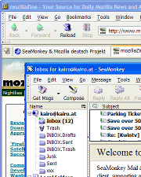

SeaMonkey 2.0 – A Show-Off
EU MozCamp Prague 2009
toc
||
start
||
< prev
|
next >
SeaMonkey 1.x Problems

Outdated look, missing features
No add-ons management, no automated or incremental updates
Unmaintained code ("xpfe")